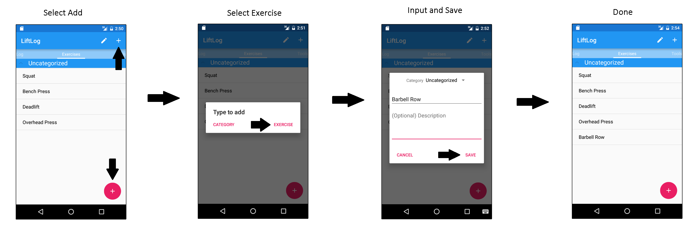

LiftLog Android App
LiftLog is a simple, easy to use android app to keep track of your weight-lifting progress.
The basics:
- Add the Exercises that you will be performing. When you first install the app, a few default exercises will be provided.
- Create a Session, which represents a weight-lifting training session.
- Add Lifts to the session. A Lift is created by choosing an exercise, weight, reps, and sets. E.g. Bench Press with 225lb x 5 reps x 5 sets
Other features:
- View History: a tool to view the complete history of a given exercise to give a snapshot of your progress.
- 1-Rep Max Calculator
- Find Best Lifts: a tool to search for the best lift you have performed for a given exercise and rep range. For example, search for the best Bench Press I have performed for 1 rep.
